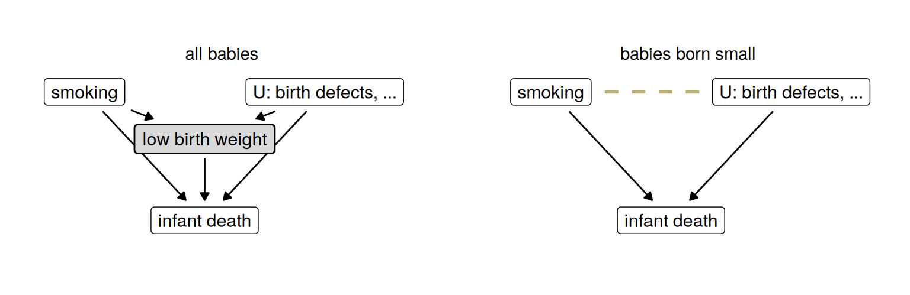
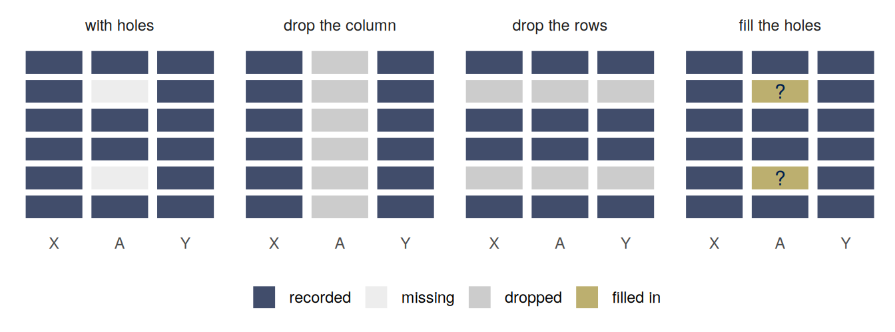
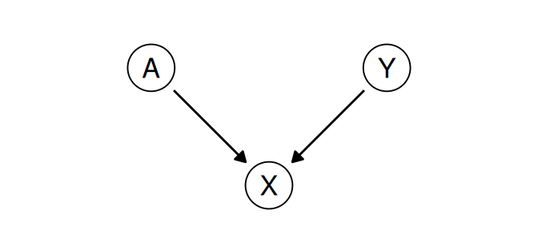
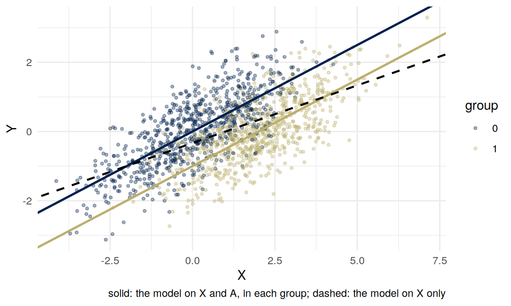
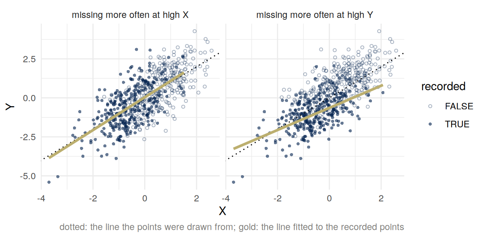

Who counts as a case
Important note: part of this week is about whether a model should use a sensitive attribute such as sex or ethnicity. The arithmetic below is not contested. Which causal graph describes a real case, and what the law or fairness requires, are contested, and my view is one view. A well-argued position I think is wrong can still get full marks.
Summary
Every dataset has a rule for who gets into it: who was born small, who was hired, who answered the survey, who was released on bail. When that rule depends on two things at once, looking only at the people it let in creates an association between those two things that is not there in the population. When it depends on the outcome itself, even after accounting for what was recorded, the people you have are a biased sample of the people you wanted. The first is conditioning on a collider; the second is data missing not at random. Every analysis also has a rule for which columns it uses, and a column is absent for reasons that run from the law to a cleaning step nobody recorded. A model that leaves a column out can become less accurate in both groups and more unequal between them, because the score it keeps is a collider, and it is the same model whatever the reason the column went. A column with holes forces one of three choices, drop the column, drop the rows, or fill the holes, and each makes an assumption about the values nobody observed. Writing that assumption down does not make it true, but it gives it an owner.
What you brought
The task was one dataset or study where some people who should be in it are not, with who is missing and the direction. For each example:
- What decided whether someone was in the data? Write it as a variable and draw arrows into it from whatever causes it.
- Does that variable depend on the outcome, on something that causes the outcome, or on neither?
Selection on a common effect
People offered a place
In the health-care problem, a person’s cost was need plus resources plus care-seeking plus noise, four independent parts, and everyone in the top 3% by cost was offered a place. Among the people offered a place, need and resources are negatively related. To clear the threshold with less need, a person needed more of something else. Need and resources are unrelated in the population; the selection related them. Cost, which both of them cause, is what the selection was on.
The birth weight paradox
In US births in 1991, babies born to mothers who smoked were more likely than other babies to be born with low birth weight, and more likely to die in their first year. Among low-birth-weight babies only, the comparison reversed: the babies of smokers had lower mortality, with a relative rate of 0.79 (Hernández-Díaz, Schisterman and Hernán, 2006, abstract). One explanation offered was that smoking somehow protects babies who are born small.
Before reading on, try to draw a causal graph in which smoking does nothing good for anybody and the reversal still appears.
Here is one. Low birth weight has several causes. Smoking is one of them. Others, such as serious birth defects, are much more dangerous in their own right. Call those \(U\), for unobserved.
Restricting attention to low-birth-weight babies, the gray box on the left, is conditioning on low birth weight. On the right, every baby in the picture was born small, so birth weight is no longer a variable and drops out of the graph. Among babies who were born small, a smoker’s baby is more likely to be small because of the smoking, and therefore less likely to be small because of something worse. Smoking and \(U\) are unrelated among all babies and negatively related among the babies born small, the dashed line. Since \(U\) kills, the smokers’ low-birth-weight babies die less often, in a world where smoking only ever harms. The abstract of Hernández-Díaz and colleagues makes this argument with causal diagrams, and concludes that adjusting for birth weight is not warranted when the question is the overall effect of something that happens before birth.
Colliders
On a path between two variables, a collider is a variable that both arrows point into, as in \(A \to C \leftarrow Y\). A path through a collider is blocked: if \(A\) and \(Y\) are independent and both cause \(C\), nothing passes from \(A\) to \(Y\) along it. Conditioning on the collider opens the path, whether by stratifying on it, by putting it in a regression, or by restricting the sample to one value of it. So does conditioning on something the collider causes. The reading’s example is Berkson’s: two independent diseases, either of which can put someone in hospital, are negatively related among hospital patients (Barocas, Hardt and Narayanan, pages 112 and 113 of the online PDF).
Compare a confounder. A variable that causes both \(A\) and \(Y\) creates an association between them, and adjusting for it removes the part of the association it created. A variable caused by both creates no association until you adjust for it, and adjusting for it creates one. “Adjust for more variables, to be safe” is not safe.
Being in the data is often a collider. A hospital admits on two conditions; a firm hires on interview or referral; a university admits on grades or school; a program offers places on a cost that has four causes. Whoever analyzes the people let in has conditioned on the rule, whether or not they meant to.
Why conditioning creates an association
Take \(A\) and \(Y\) independent, and first the case with no noise: \(C = Y + A\). Among people with the same \(C\), \(A = C - Y\), so \[ \operatorname{Cov}(Y, A \mid C) = \operatorname{Cov}(Y,\, C - Y \mid C) = -\operatorname{Var}(Y \mid C). \] Once the total is fixed, a high value of one cause means a low value of the other. No distribution was assumed.
Now add noise and let the arrows have any strength: \[ C = \beta_Y Y + \beta_A A + \varepsilon , \] with \(\varepsilon\) independent of \(A\) and \(Y\). Take out of \(Y\) and out of \(A\) the part that is linearly predictable from \(C\), using the simple regression slopes \(\gamma_Y = \operatorname{Cov}(Y, C)/\operatorname{Var}(C)\) and \(\gamma_A = \operatorname{Cov}(A, C)/\operatorname{Var}(C)\), and ask how what is left covaries. By bilinearity, \[ \begin{aligned} \operatorname{Cov}(Y - \gamma_Y C,\; A - \gamma_A C) &= \operatorname{Cov}(Y, A) - \gamma_A \operatorname{Cov}(Y, C) - \gamma_Y \operatorname{Cov}(C, A) + \gamma_Y \gamma_A \operatorname{Var}(C) \\ &= \operatorname{Cov}(Y, A) - \frac{\operatorname{Cov}(Y, C)\,\operatorname{Cov}(A, C)}{\operatorname{Var}(C)} . \end{aligned} \] Here \(\operatorname{Cov}(Y, A) = 0\), \(\operatorname{Cov}(Y, C) = \beta_Y \operatorname{Var}(Y)\) and \(\operatorname{Cov}(A, C) = \beta_A \operatorname{Var}(A)\), so \[ \boxed{\;\operatorname{Cov}(Y - \gamma_Y C,\; A - \gamma_A C) = -\,\frac{\beta_Y\, \beta_A\, \operatorname{Var}(Y)\operatorname{Var}(A)}{\operatorname{Var}(C)}\;} \qquad \operatorname{Var}(C) = \beta_Y^2 \operatorname{Var}(Y) + \beta_A^2 \operatorname{Var}(A) + \operatorname{Var}(\varepsilon). \] In this model the association has the sign opposite to \(\beta_Y \beta_A\): if both causes push the collider the same way, then holding the collider fixed makes them look like substitutes. It shrinks as the noise grows, because a noisy collider says less about its causes. When the variables are jointly normal, the left side is also \(\operatorname{Cov}(Y, A \mid C)\); when \(A\) is binary, as in the next section, it is not, but the sign is the same in the examples here.
What this leaves out: outside the linear model, the size and even the sign of the association depend on how the causes combine, and cannot be read off the graph. Elwert and Winship (2014, page 2.7 of their copy) say that the sign and magnitude “cannot generally be predicted without additional assumptions.” The graph says an association appears; the model says which way.
Leaving a column out
Rows and columns
Part 1 was about rows: which people a dataset contains. Datasets also follow rules for what is recorded about those people, and columns go missing for reasons as different as the rows do. The law may forbid using one (a protected characteristic in a hiring model). Nobody may have collected one. Or a column was recorded for some people and not for others, and whoever cleaned the data dropped it, because half of it was empty and the software would otherwise have dropped the rows.
A column with holes, then, forces one of three choices, drawn below, and the rest of these notes takes them in turn: drop the column (this part), drop the rows that have holes (the complete-case analysis of the next part), or fill the holes in (the part after). The model that results from dropping a column is the same model whatever the reason the column went, so the arithmetic below applies to a column left out on principle and to one left out by default alike. What differs between the two is only whether anyone can say why.

An unaware model
Here is a process in which an attribute \(A\) has no effect on the outcome \(Y\), but does affect a predictor \(X\). Take \(A\) to be a sensitive attribute first; the other reasons for leaving it out come back at the end of this part.
- \(Y\) is how well someone would do a job, standardized, \(Y \sim N(0, 1)\). Larger is better.
- \(A \in \{0, 1\}\) marks a group, half the population each, independent of \(Y\).
- \(X\) is a test score, \(X = Y + 2A + \varepsilon\) with \(\varepsilon \sim N(0, 1)\). Membership of group 1 adds two points to the score and nothing to the job, as paid coaching might.

\(X\) is a collider between \(A\) and \(Y\). Fit two models for \(Y\): one that uses \(X\) only, as someone might because using \(A\) feels like discrimination, or because \(A\) was recorded for some applicants only and the column was dropped (the first is sometimes called an unaware model), and one that uses \(X\) and \(A\). The setting is a coursework problem from this course in 2024, with the numbers of its worked solution.
generate_data <- function(n = 500, betaY = 1, betaA = 2) {
A <- rbinom(n, 1, 1/2)
Y <- rnorm(n)
X <- betaY * Y + betaA * A + rnorm(n)
data.frame(Y = Y, X = X, A = factor(A))
}
train <- generate_data(5000)
test <- generate_data(5000)
unaware <- lm(Y ~ X, data = train)
full <- lm(Y ~ X + A, data = train)
round(coef(unaware), 2)(Intercept) X
-0.34 0.33 round(coef(full), 2)(Intercept) X A1
0.00 0.49 -0.99 test |>
mutate(pred_unaware = predict(unaware, newdata = test),
pred_full = predict(full, newdata = test)) |>
group_by(A) |>
summarize(mean_Y = mean(Y),
mean_pred_unaware = mean(pred_unaware),
mean_pred_full = mean(pred_full),
mse_unaware = mean((Y - pred_unaware)^2),
mse_full = mean((Y - pred_full)^2)) |>
mutate(across(-A, \(v) round(v, 2)))# A tibble: 2 x 6
A mean_Y mean_pred_unaware mean_pred_full mse_unaware mse_full
<fct> <dbl> <dbl> <dbl> <dbl> <dbl>
1 0 0 -0.34 0 0.66 0.48
2 1 0 0.31 -0.01 0.64 0.49(R prints the coefficient on \(A\) as A1: \(A\) is stored as a factor.) The two groups have the same distribution of \(Y\). The model on \(X\) alone predicts a gap of about two thirds of a standard deviation between them and is less accurate in both groups. The model on \(X\) and \(A\) predicts no gap and is more accurate in both.

At any given score, the people in group 1 have lower \(Y\): two points of their score came from \(A\). The model that uses \(A\) subtracts them. The model on \(X\) alone fits one line through both clouds, flatter than either group’s, so it reads the coaching as ability: it predicts too high for group 1 and too low for group 0.
The same numbers by hand
\(\operatorname{Var}(A) = 1/4\), so \(\operatorname{Var}(X) = 1 + 4 \cdot \tfrac14 + 1 = 3\) and \(E[X] = 1\). Since \(A\) and \(\varepsilon\) are independent of \(Y\), \(\operatorname{Cov}(X, Y) = \operatorname{Var}(Y) = 1\).
\(X\) only. The slope is \(\operatorname{Cov}(X, Y)/\operatorname{Var}(X) = 1/3\), and the line passes through the means, so \(\hat Y = (X - 1)/3\). In group \(a\), \(E[X \mid A = a] = 2a\), so the mean prediction is \(-1/3\) for group 0 and \(+1/3\) for group 1. The mean squared error is \(\operatorname{Var}(Y) - \operatorname{Cov}(X, Y)^2/\operatorname{Var}(X) = 2/3\). It is \(2/3\) in each group: in group 0, \(Y - \hat Y = \tfrac13(2Y - \varepsilon + 1)\), with variance \(5/9\) and mean \(1/3\).
\(X\) and \(A\). Within group \(a\), \(X - 2a = Y + \varepsilon\), so the model is two simple regressions with the same slope, \(\operatorname{Var}(Y)/(\operatorname{Var}(Y) + \operatorname{Var}(\varepsilon)) = 1/2\): \[ \hat Y = \tfrac12 (X - 2A) = \tfrac12 X - A . \] The mean prediction is \(0\) in each group, and the mean squared error is \(1 - 1/2 = 1/2\) in each group.
The coefficient on \(A\) is \(-1\). That is the collider. In the formula of the previous section, with \(\beta_Y = 1\), \(\beta_A = 2\), \(\operatorname{Var}(Y) = 1\), \(\operatorname{Var}(A) = 1/4\) and \(\operatorname{Var}(X) = 3\), the covariance of \(Y\) and \(A\) left over after removing what \(X\) predicts is \(-(2 \cdot \tfrac14)/3 = -1/6\): once you know someone’s score, being in group 1 is evidence of lower \(Y\). What is left of the variance of \(A\) after removing what \(X\) predicts is \(\tfrac14 - (\tfrac12)^2/3 = \tfrac16\), and the coefficient on \(A\) in a regression on \(X\) and \(A\) is the ratio of the two, \((-\tfrac16)/\tfrac16 = -1\) (stated here, not proved; it is the usual way a second variable’s coefficient in a regression is computed).
With a coaching effect \(\beta_A\) in place of 2, the same steps give \(\operatorname{Var}(X) = 2 + \beta_A^2/4\), a gap of \(\beta_A/(2 + \beta_A^2/4)\) between the groups’ mean predictions from \(X\) alone, and a mean squared error of \(1 - 1/(2 + \beta_A^2/4)\) against \(1/2\).
What was leaving it out for?
Leaving \(A\) out of a model is a common response to the worry that a model will discriminate, and it has an obvious appeal: a model that does not look at the attribute cannot treat anyone differently because of it, it seems. In this example, leaving \(A\) out made the model less accurate in both groups and produced a gap between the groups that is not in the outcome.
UK law separates two things here. Direct discrimination (Equality Act 2010, section 13) is treating someone less favorably because of a protected characteristic. The model that uses \(A\) does use it: at the same score it gives a member of group 1 a lower prediction than a member of group 0. Indirect discrimination (section 19) is a provision, criterion or practice applied whatever the characteristic, which puts people who share that characteristic, the person complaining among them, at a particular disadvantage, unless it can be shown to be a proportionate means of achieving a legitimate aim. The model on \(X\) alone applies one rule whatever the group and puts group 0 at a disadvantage. Which of these, if either, would be unlawful in a given setting depends on facts, and for indirect discrimination on whether the rule is a proportionate means to a legitimate aim, which I am not going to adjudicate, and the arithmetic does not answer it. What the arithmetic does answer is whether “the model does not use \(A\)” and “the model does not treat the groups differently” are the same claim. They are not.
Nor does it follow that using \(A\) is better. Change the graph so that \(A\) affects the recorded outcome itself, for instance because past decisions about group 1 lowered its measured performance, and a model that uses \(A\) will learn that and repeat it. Which graph you are in is not settled by the data. It is a claim you make, and including or excluding \(A\) follows from it. You have to choose.
Now drop the word “sensitive”. Suppose \(A\) is a column that was recorded for half the applicants, and the person who prepared the data dropped it rather than lose the rows. The model is the one on \(X\) alone, with the same error in both groups and the same gap between them. Nothing in the table above used the reason \(A\) was absent. The difference between the two cases is that leaving out a protected characteristic is a choice someone made for a reason that can be argued with, in court if necessary, and dropping a half-empty column is a default that nobody argued for and that the next person to open the file will not know was made. The model cannot tell the two apart. The analyst can, and that is the point of asking why a column is missing before deciding what to do about it.
Adjusting for a collider
Change the question. Instead of predicting \(Y\), ask whether \(A\) affects \(Y\). The difference in mean \(Y\) between the groups is \(0\), which is right. The model that uses \(X\) has a coefficient of \(-1\) on \(A\): among people with the same score, those in group 1 do worse. As a statement about prediction at a fixed score, that is true. As a statement about what would happen to someone’s \(Y\) if their \(A\) were changed, it is false. Adjusting for \(X\) made the estimate of the effect worse, because \(X\) is a collider. Adjusting for a confounder removes bias; adjusting for a collider adds it.
So the same graph gives opposite advice for two questions. To predict \(Y\) well, condition on \(X\) and \(A\). To estimate the effect of \(A\) on \(Y\), do not condition on \(X\).
Who is missing
Missing data
Now the cases themselves. Suppose \(Y\) is sometimes missing and \(X\) is always recorded. Write \(C = 1\) if \(Y\) is observed and \(C = 0\) if it is missing. The letter is the one from the first part on purpose: whether someone is in the data is something the analysis conditions on, and when two things both cause it, it is a collider. Hernán and Robins (chapter 8) use \(C\) the other way round, \(C = 1\) for censored or lost to follow-up, with the analysis restricted to \(C = 0\); their \(C\) “can represent missing data on the outcome for any reason.” Van Buuren writes \(R\), which in this course is a risk score. Following Rubin (1976) and van Buuren, there are three cases.
- Missing completely at random (MCAR): \(C\) is independent of \(X\) and \(Y\) together. Whether a value is missing has nothing to do with the data. A box of paper forms lost in a flood, when which forms were in the box had nothing to do with their answers.
- Missing at random (MAR): \(C\) is independent of \(Y\) given \(X\). The chance of being missing may depend on what was recorded, but among people with the same \(X\) it does not depend on \(Y\). Older respondents skip the income question more often, age is recorded, and at a given age skipping has nothing to do with income.
- Missing not at random (MNAR): neither. Among people with the same \(X\), whether \(Y\) is missing still depends on \(Y\). People with high incomes skip the income question more often, at every age.
These are the definitions for one incomplete variable with the rest recorded; van Buuren’s section 2.2 gives the general version. “Missing at random” does not mean random in the everyday sense. It means random once you account for what was recorded.
As a graph, \(C\) is a node like any other. MCAR: no open path between \(C\) and \((X, Y)\). MAR: every path between \(Y\) and \(C\) is blocked once you condition on \(X\) (remember that conditioning on a collider opens a path). MNAR: some path between \(Y\) and \(C\) stays open, for instance \(Y \to C\), or an unrecorded cause of \(Y\) that also points into \(C\). Analyzing the complete cases is conditioning on \(C = 1\).
You can check whether missingness depends on \(X\), because \(X\) is seen for everyone. You cannot check whether it depends on \(Y\) once \(X\) is accounted for, because the values of \(Y\) the check would need are the missing ones. Van Buuren (section 2.2.4): it is not possible to test MAR against MNAR “since the information that is needed for such a test is missing.”
Complete-case analysis
The default in lm() in R, and in most software, is to drop every row with a missing value without asking; na.omit() does the same by hand, and mean(y, na.rm = TRUE) drops the missing values of one variable. What does that do to the mean of \(Y\)?
The mean among the complete cases is \(E[Y \mid C = 1] = E[YC]/P(C = 1)\), because \(YC\) is \(Y\) when observed and \(0\) otherwise. And \(\operatorname{Cov}(Y, C) = E[YC] - E[Y]\,P(C = 1)\). Together: \[ \boxed{\;E[Y \mid C = 1] - E[Y] = \frac{\operatorname{Cov}(Y, C)}{P(C = 1)}\;} \] The complete-case mean is biased by the covariance between the outcome and being observed, scaled up by how few are observed. Equivalently, since \(E[Y]\) is the average of the observed and the missing means weighted by their shares, the bias is the share missing times the gap between the two means: \(E[Y \mid C = 1] - E[Y] = P(C = 0)\,\big(E[Y \mid C = 1] - E[Y \mid C = 0]\big)\).
- MCAR. \(C\) is independent of \(Y\), so the covariance is zero and the complete-case mean is unbiased. It is computed from fewer people, so it varies more. MCAR costs variance, not bias.
- MAR. Split the covariance into a part between values of \(X\) and a part within them, as a covariance across areas splits into between and within: \[ \operatorname{Cov}(Y, C) = E\big[\operatorname{Cov}(Y, C \mid X)\big] + \operatorname{Cov}\big(E[Y \mid X],\; E[C \mid X]\big). \] Under MAR the first term is zero, so \(\operatorname{Cov}(Y, C) = \operatorname{Cov}\big(E[Y \mid X],\; P(C = 1 \mid X)\big)\). The complete-case mean is biased unless the mean of \(Y\) at each \(X\) and the chance of answering at each \(X\) are uncorrelated: typically, when the kinds of people who answer less have a different mean.
- MNAR. The covariance involves the missing values, so it cannot be computed from the data. Its sign can often be argued: if high earners skip the income question, \(\operatorname{Cov}(Y, C) < 0\) and the complete-case mean is too low.
An example (MAR). Two age groups, equally common. Mean income is 40 in the younger group and 60 in the older (thousands). The younger answer the income question with probability 0.8, the older with probability 0.4, and within each group answering is unrelated to income. The true mean is 50. The share answering is \(P(C = 1) = \tfrac12(0.8) + \tfrac12(0.4) = 0.6\), and the mean among those who answered is \[ \frac{\tfrac12(0.8)(40) + \tfrac12(0.4)(60)}{0.6} = \frac{16 + 12}{0.6} = 46.7 , \] too low by \(3.3\). With the formula: \(E[YC] = 28\), so \(\operatorname{Cov}(Y, C) = 28 - 50 \times 0.6 = -2\), and \(-2/0.6 = -3.3\).
When the complete cases are enough
For a regression of \(Y\) on \(X\) the story is different. Under MAR, \(C\) is independent of \(Y\) given \(X\), so \[ E[Y \mid X = x, C = 1] = E[Y \mid X = x] . \] Among the complete cases the average of \(Y\) at each \(x\) is what it is in the population. The complete cases have a different mix of \(x\) values, but if the regression line is right at every \(x\), a different mix of \(x\) values does not move it. So complete-case regression of \(Y\) on \(X\) is unbiased when missingness depends on \(X\) only, even though the complete-case mean of \(Y\) is biased. Van Buuren’s section 2.7 states the general version: when the probability of being missing does not depend on \(Y\), and the model for \(Y\) given \(X\) is correct, the complete-case regression coefficients are “free of bias.” Two warnings. If the line is only an approximation, changing the mix of \(x\) changes which line fits best. And if missingness depends on \(Y\) given \(X\), removing points can change the average of \(Y\) at each \(x\), and then the line moves. It need not: dropping points symmetrically in the residual, far above and far below the line alike, leaves the average at each \(x\) where it was. In the simulation below the high \(Y\) go missing, and the line flattens.

Reweighting the people who answered
Under MAR there is a way to recover the mean of \(Y\) without filling anything in. Let \(e(X) = P(C = 1 \mid X)\), the chance of answering given \(X\), and suppose it is never zero. Give each person who answered the weight \(1/e(X)\): a respondent from a group where 40% answer stands for \(1/0.4 = 2.5\) people like them. Then \[ E\left[\frac{C\,Y}{e(X)}\right] = E\left[\frac{E[C \mid X]\;E[Y \mid X]}{e(X)}\right] = E\big[E[Y \mid X]\big] = E[Y]. \] The first step conditions on \(X\) and uses MAR to split \(E[CY \mid X]\) into \(E[C \mid X]\,E[Y \mid X]\); the second uses \(E[C \mid X] = e(X)\); the third is iterated expectation. In the income example the weighted mean is \(\tfrac12(0.8)(40)/0.8 + \tfrac12(0.4)(60)/0.4 = 50\). This is the Horvitz–Thompson estimator of survey sampling (Horvitz and Thompson, 1952), with the probability of being sampled replaced by the probability of answering. Hernán and Robins (section 8.5) use the same weights for people lost to follow-up in a trial, written \(1/\Pr[C = 0 \mid L, A]\) in their notation.
Weighting removes the bias and pays for it in variance: a person with a small \(e(X)\) gets a large weight, and a few large weights make the estimate noisy. In practice \(e(X)\) is not known and is estimated from who answered at each \(X\). If whether someone answers depends on \(Y\) among people with the same \(X\), no weight built from \(X\) can undo it.
Missing by construction
Some data are missing because of the decision the data are meant to evaluate. In a bail hearing, a judge decides whether to release a defendant. Whether a released defendant returns for their court appearance without committing a crime is recorded. For a defendant who is detained, what would have happened on release is not observed. Lakkaraju, Kleinberg, Leskovec, Ludwig and Mullainathan (2017) call this the selective labels problem: “the observed outcomes are themselves a consequence of the existing choices of the human decision-makers.” Suppose you want to check whether an algorithm would make better release decisions than the judges. The labels exist only where judges released people. Suppose judges decided using information the algorithm does not have, such as what they saw in the courtroom, and that information predicts the outcome. Then among defendants with the same recorded features, the ones a judge detained are the ones the judge expected to do worst. That is MNAR, by construction: the rule that decides who has a label is a prediction of the label. (A judge who used only the recorded features would give MAR, with no labels at all for the features nobody is released on.) Lakkaraju and colleagues make the first supposition explicit, and their paper proposes a way to compare an algorithm with the judges anyway. Some judges release more defendants than others, and cases are assigned to judges as if at random. Take the most lenient judge’s released defendants, whose outcomes are all recorded; let the algorithm detain the ones it ranks worst until the release rate matches a stricter judge’s; and compare the failure rate of that contracted pool with the stricter judge’s own. Both pools come from comparable cases at the same release rate, so the comparison needs no label for anyone the lenient judge detained.
The file drawer was MNAR in the same way: whether a study was published depended on its own \(z\)-value, so the missing studies were missing in a known direction. So was the top of a feed: whether a post reached you depended on how extreme it was.
Filling in
The alternative to dropping incomplete rows is to fill them in.
- Mean imputation replaces each missing \(Y\) with the mean of the observed ones. It leaves the complete-case mean where it was, so it fixes no bias, and it shrinks the spread of \(Y\).
- Regression imputation replaces each missing \(Y\) with its predicted value from a regression on \(X\) fitted to the complete cases. Under MAR, and if the regression of \(Y\) on \(X\) is right, this puts the mean in the right place. But every filled-in value lies on the line, so the completed data look more certain and more strongly related than they are.
Both fill in one value per gap, and both make the same error about variance: the analysis that follows treats the filled-in values as if they had been observed. Standard errors come out too small and confidence intervals too narrow. A single fill-in hides variance.
Multiple imputation puts it back. Draw \(m\) plausible completions of the data from a model for the missing values given the observed ones, with two kinds of randomness: the noise a real observation would have around the model’s prediction, and the uncertainty in the model itself, whose parameters are drawn afresh for each completion rather than fixed at their estimates (van Buuren, section 3.1.3, “predict + noise + parameter uncertainty”). Run the analysis on each completed dataset and average the \(m\) estimates. For its variance, add two parts: \[
\text{total variance} = \text{within} + \left(1 + \frac1m\right) \times \text{between},
\] where within is the average over the \(m\) completions of the estimate’s squared standard error, and between is the variance of the \(m\) estimates across completions. This is Rubin’s rule for combining them (van Buuren, section 2.3.2). The second part is the variance a single fill-in threw away: how much the answer changes depending on which plausible values were filled in. The class runs this with the R package mice.
What multiple imputation does not do is escape the choice. The model the completions are drawn from is an assumption about values nobody observed, usually MAR given the variables put into it. It cannot be checked against the missing values, because they are missing. Writing the model down is better than letting na.omit() make an unstated assumption, because a written assumption can be argued with. But it is still an assumption. Imputing is not observing.
Three choices, one table
Back to the coursework data, with the column \(A\) now recorded for half the rows, chosen at random, and missing for the other half. Take the three choices in turn and ask, for each, how well it predicts \(Y\) on rows where \(A\) is recorded, how well on rows where it is missing, and how big a gap it predicts between the groups. The gap is the mean prediction for group 1 minus the mean for group 0, and the truth is \(0\).
- Drop the column. Fit \(Y\) on \(X\) alone, using every row. This is the unaware model: mean squared error \(2/3\) and a gap of \(2/3\), for every row.
- Drop the rows. Fit \(Y\) on \(X\) and \(A\) using the rows that have \(A\), which is what
lm()does by itself. The holes are at random, so the fit is right: slope \(1/2\), coefficient \(-1\) on \(A\). The model predicts well, and with no gap, wherever \(A\) is recorded, and not at all where it is not. - Fill in. Impute \(A\) from \(X\) and \(Y\) on the training rows: 20 completions, each drawn from a logistic regression of \(A\) on \(X\) and \(Y\) refitted to a bootstrap sample of the rows that have \(A\), so that the imputation model’s parameters vary from one completion to the next as well as the draws (the bootstrap route of van Buuren’s section 3.1.3;
micedoes the same with more care), and fit \(Y\) on \(X\) and \(A\) to each completed dataset, averaging the fits. The fit is again right, now using every row. For a new row with \(A\) recorded, the prediction is the full model’s. For a new row without \(A\), the model has to average its prediction over what \(A\) could be given \(X\).
| MSE, A recorded | MSE, A missing | gap, A recorded | gap, A missing | |
|---|---|---|---|---|
| drop the column | 0.65 | 0.68 | 0.66 | 0.66 |
| drop the rows | 0.50 | no prediction | 0.02 | no prediction |
| fill in | 0.50 | 0.68 | 0.03 | 0.65 |
Read the table by column. Where \(A\) is recorded, the two methods that use it predict equally well and with no gap; filling in has bought nothing there that dropping the rows did not already have, except that the fit used all the rows. Where \(A\) is missing, nothing does better than \(X\) alone, and the gap is back at \(0.65\). Filling in recovered the fit, not the missing information: for a row whose \(A\) was never recorded, an imputed \(A\) is a function of that row’s \(X\), and the prediction is a prediction from \(X\).
The “no prediction” entries are a choice of pipeline, not a law. The complete-case fit could be given the same prediction-time step as filling in, averaging its prediction over \(P(A \mid X)\) for a row without \(A\), and its row would then match the fill-in row. With the holes at random the two fits are the same fit; what separates the second and third rows is what each does at prediction time, and neither can do better than \(X\) alone where \(A\) was never recorded.
The last column has a closed form. For a row without \(A\), the best prediction from \(X\) alone is \(E[Y \mid X] = E[E[Y \mid X, A] \mid X] = X/2 - P(A = 1 \mid X)\). Given \(A = a\), \(X\) is \(N(2a, 2)\), so the log odds of \(A = 1\) given \(X = x\) are \(\big(x^2 - (x - 2)^2\big)/4 = x - 1\), and \(p(x) = P(A = 1 \mid X = x) = 1/(1 + e^{1 - x})\). The mean squared error of this prediction is \(E[\operatorname{Var}(Y \mid X)] = \tfrac12 + E[p(X)(1 - p(X))] \approx 0.66\), against the linear unaware model’s \(2/3\): the straight line was giving away almost nothing. The gap it predicts is \(1 - \big(E[p(X) \mid A = 1] - E[p(X) \mid A = 0]\big) \approx 0.65\), not \(0\), because \(X\) holds only part of the information about \(A\).
One more thing the table says. Filling \(A\) in from \(X\) so that the model can use it is using a proxy for \(A\). If the reason \(A\) was left out was the law, the proxy raises the same question the law asked, which is week 8’s subject.
Lenses
Who is in the data? The babies who were born small. The people offered a place. The complete cases. The defendants a judge released. The studies that were published and the posts that reached a feed. In each, the rule that let people in depended on something connected to the outcome, and restricting to the people it let in changed what the numbers mean. And what is in the data about them: the column that was dropped, on principle or by default, changed what the model could see.
You have to choose, so choose, and defend it. A column with holes forces a choice between dropping it, dropping the rows and filling in, and each depends on something the data do not settle: which causal graph \(A\) is in, and whether the missing are like the observed once you account for what was recorded, MAR or MNAR. Every analysis of incomplete data makes one of these assumptions; what varies is whether it is made on purpose, and whether anyone can later say why.
What can be changed, and how? What things are considered “controlled for” or “held fixed,” and is that realistic? The coefficient on \(A\) holds the score fixed while the group changes, which is not something that happens to anyone. A comparison among low-birth-weight babies holds birth weight fixed while asking about smoking, which is one of the things that set it.
And why? Dropping incomplete rows is the default because it is what the software does without asking, and a default nobody chose is one nobody has to defend.
Political economy of data
Creating data takes resources. Someone pays to count, to record and to keep, and so the data that exist are the data someone found worth paying for. The lecture ends on the question of what that means for which data get created and which do not, and leaves it open. The class asks a version of it: name one dataset that should exist and does not, say who would have had to collect it, and why they have not.
Readings
Required
- Hernán and Robins, Causal Inference: What If (Chapman and Hall/CRC, 2020), chapter 8, Selection bias, sections 8.1 to 8.5 (pages 109 to 120 of the free online version of 19 August 2026; the page numbers change between online versions). The chapter writes \(A\) for a treatment, \(L\) for measured covariates and \(C = 1\) for not selected or censored.
- Re-read Barocas, Hardt and Narayanan, Fairness and Machine Learning: Limitations and Opportunities, chapter 5, Causality: the subsection “Colliders” (pages 112 and 113 of the fairmlbook.org PDF) and the list of what controlling for each kind of variable does (page 115). The printed edition (MIT Press, 2023) may be paginated differently.
Optional
- van Buuren, Flexible Imputation of Missing Data, second edition (Chapman and Hall/CRC, 2018, https://doi.org/10.1201/9780429492259), sections 1.1 to 1.3, free to read online: the source for the names missing completely at random, at random, and not at random, which chapter 8 does not use.
- Elwert and Winship, Endogenous Selection Bias: The Problem of Conditioning on a Collider Variable (Annual Review of Sociology 40, 2014, 31–53, https://doi.org/10.1146/annurev-soc-071913-043455): section 4, and the examples of truncation, nonresponse and attrition in section 5. The link is the authors’ copy, numbered 2.1 to 2.23.
- Lakkaraju, Kleinberg, Leskovec, Ludwig and Mullainathan, The Selective Labels Problem: Evaluating Algorithmic Predictions in the Presence of Unobservables (Proceedings of the 23rd ACM SIGKDD International Conference on Knowledge Discovery and Data Mining, 2017, 275–284, https://doi.org/10.1145/3097983.3098066), section 1.
- van Buuren, section 2.7, When not to use multiple imputation.
- Hernández-Díaz, Schisterman and Hernán, The birth weight “paradox” uncovered? (American Journal of Epidemiology 164(11), 2006, 1115–1120).
Cited in the text and not assigned: Rubin, “Inference and missing data” (Biometrika 63(3), 1976, 581–592, https://doi.org/10.1093/biomet/63.3.581); Horvitz and Thompson, “A Generalization of Sampling Without Replacement from a Finite Universe” (Journal of the American Statistical Association 47(260), 1952, 663–685, https://doi.org/10.1080/01621459.1952.10483446); the Equality Act 2010, c. 15, sections 13 and 19 (https://www.legislation.gov.uk/ukpga/2010/15); ST313 coursework 2 (2024) and its worked solution.